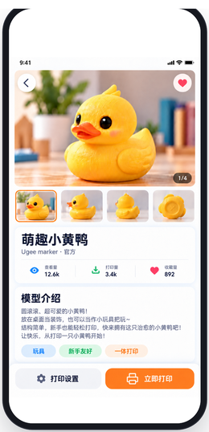
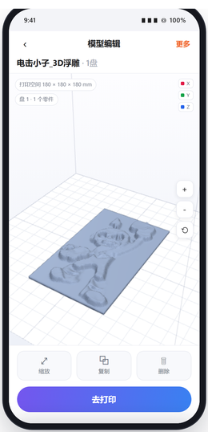
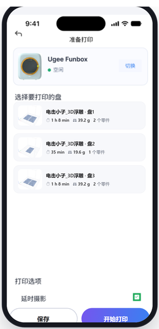

1
入口链路
从模型详情页进入编辑，编辑完成后回到详情页；参数页可随时进入

模型详情页
流程起点
底部左侧「打印设置」为跳转热区
底部左侧「打印设置」为跳转热区
打印设置

模型编辑页
本模块主页面 · 单盘时不展示盘号控件
更多

打印设置页
打印模式 / 底座 / 温度 / 填充 / 支撑
去打印

准备打印页
切片成功后的落点 · 整页复用设计稿
导航规则
返回 = 保留编辑结果
编辑页「返回」回模型详情页，当前编辑与参数修改默认保留，本期不做退出二次确认
参数修改 = 当前任务立即生效
从打印设置页返回编辑页，保留已改参数、无需重新加载模型、3D 编辑状态不变
「退出」触发保存范围（顶部右侧「保存」已删除）
点顶部左侧「退出」→ 保存范围弹窗（单选：仅用于当前模型 / 后续模型默认使用）。未选范围时底部为「取消」→ 返回打印设置页；选中后变「确定」 → 保存并返回模型编辑页 + Toast「打印设置已保存」。右上角 × 关闭亦返回打印设置页